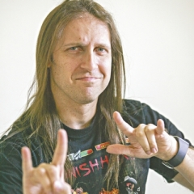
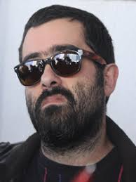
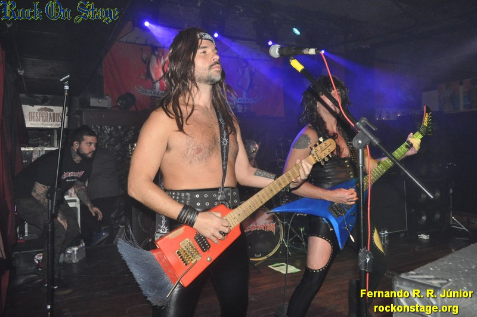

Bruno Alexandre Sutter de Lima
É um humorista, ator e músico brasileiro, tendo obtido reconhecimento por iniciar sua carreira no grupo humorístico Hermes e Renato, depois com a banda de heavy metal/rock cômico, Massacration.

Fausto Fanti Jasmin
Nascido em Petrópolis, 20 de outubro de 1978 – São Paulo, 30 de julho de 2014 foi um humorista brasileiro, conhecido por integrar o grupo humorístico Hermes e Renato, primeiramente na MTV Brasil e posteriormente (como Banana Mecânica) na Record. Fausto era considerado o mentor intelectual do grupo

Felipe Torres
Felipe Torres, é um humorista carioca. Integra o grupo Banana Mecânica, antes conhecido como Hermes e Renato. Seu personagem mais famoso é o "Luiz Boça".

Marco Antonio
Fundador do programa "Hermes & Renato junto com seu vizinho renato, na Banda Massacration ele é o guitarrista secundario, mais conhecido como ritmista.

Adriano Pereira
Headmaster (Adriano Pereira) nas guitarras, humorista carioca. Ficou famoso com o personagem "Joselito" , o homem que não sabe brincar.